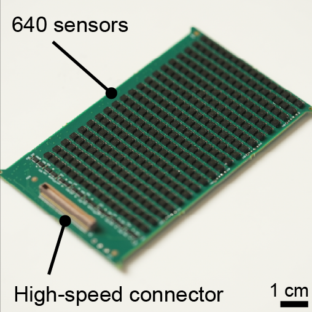
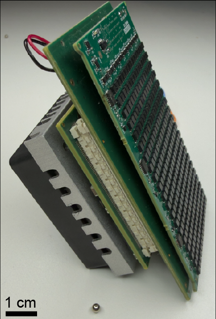
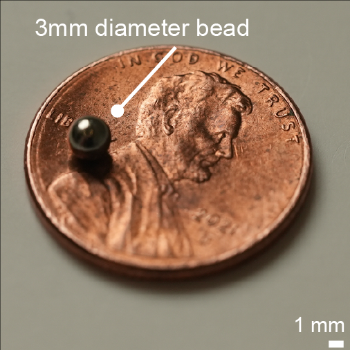

My work is shaped by engineering practice and by my lived experience as a person with bilateral lower limb amputations. I approach bionic reconstruction as an integrated systems engineering problem in which anatomy, neural signaling, embedded electronics, control algorithms, and robotic hardware must be designed together. The coupling among these components produces emergent behavior that cannot be understood by studying any one subsystem in isolation. Engineering and interrogating the complete system in practice therefore offers a way to uncover principles of human motor control. These scientific insights, in turn, reveal how each anatomical, sensing, computational, and mechanical component can be improved and advanced.
Doctoral Research Highlights
My doctoral research focuses on advancing intuitive human-machine interfacing. In practice, intuitive control remains elusive because many interfaces rely on weak, indirect, or unstable signals, or require extensive processing that obscures the user's underlying motor intent. I am therefore developing tools that maximize the information we can extract from the peripheral nervous system. To further this goal, I design novel interfaces that can efficiently read from and write to the human nervous system. These tools are now being evaluated in an FDA IDE clinical trial (NCT06391697) to assess their feasibility for restoring intuitive control of bionic prostheses.
We present MuSE (Muscle State Estimator), a skin-mounted magnetometer array that wirelessly tracks 3 mm diameter magnetic beads implanted in muscle, enabling continuous neuromuscular sensing across multiple degrees of freedom for prosthetic control. MuSE uses INFO, an extended information filter, to estimate magnet position and velocity in real time.
The platform pairs implanted 3 mm magnetic beads with a skin mounted array of 640 sensors and real time state estimation, translating muscle dynamics into continuous signals for neuroprosthetic control.
Because the beads move with the tissue, MuSE directly measures deep muscle mechanics, including muscle length and velocity, at the implant depth.
Inside the system
MuSE sensing hardware and INFO tracking


Sensor array and electronics stackThe FPGA enables parallel processing of the high density magnetometer array. Together, the 640 sensors and high throughput electronics extend tracking depth, reduce estimated magnet position error and variance, and enable submillimeter tracking.

Implanted magnetic beadsPairs of passive 3 mm beads encode muscle length through their changing separation; their small, unpowered form keeps the implant minimally invasive.
INFO tracking pipelineSensor measurements, dipole physics, noise, magnet dynamics, and environmental disturbances are fused for real time state estimation. Using the information form lets measurements from the dense array contribute additively, while a second order motion model provides smooth position and velocity estimates without injecting noise into the state estimate.algorithm PDF / GitHub repository
A prosthetic ankle and foot with multiple degrees of freedom enables continuous neural control, agile locomotion, and adaptation across complex terrain.
We combine muscle reconstruction, an implant anchored to bone, and continuous neural control in a neuroembodied prosthetic system that supports versatile movement and greater prosthetic embodiment.
A neuromuscular model optimized for the participant maps muscle activation to desired ankle dynamics, allowing direct modulation of powered prosthetic torque.
A neuromuscular modeling and optimization framework estimates phantom limb movement and quantifies the motor benefits of preserved coupling between agonist and antagonist muscles.
Learn more about magnetomicrometry
Magnetomicrometry uses small magnetic beads implanted in muscle and external magnetic field sensors to track muscle length in real time. The videos below introduce the measurement approach and its use in prosthetic control.